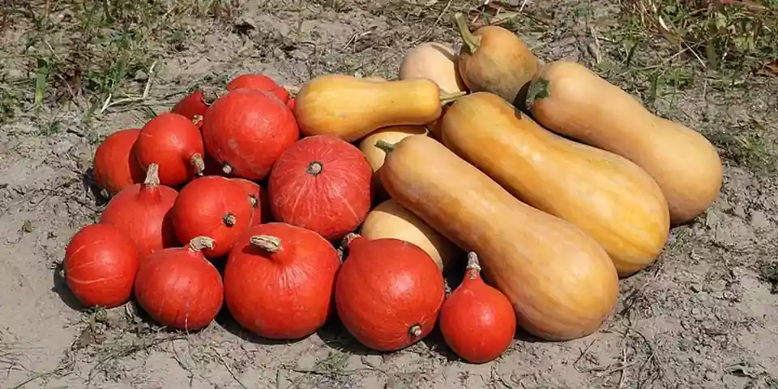

What pollination actually needs, and what nobody can tell you
Some crops set fruit on their own. Some need an insect to carry pollen from one flower to another. The difference decides what a bad year means - and there is a third thing, about your own garden, that no app can honestly claim to know.
Three different plants, three different problems
A tomato flower contains both halves. It pollinates itself, and a bumblebee shaking it only helps a little. If your tomatoes are not setting fruit, the usual culprit is warm nights, not a shortage of insects.
Corn does not use insects at all. It is wind-pollinated: the tassel sheds pollen that has to land on silks below, which is why a single row of corn produces ears with blank patches and a block of four rows does not. Nothing that flies is involved.
A squash is neither. It carries male and female flowers separately on the same plant, and pollen cannot get from one to the other on its own. An insect has to carry it. Extension services state this plainly: pollen "must be transferred from the male flowers to the female flowers by bees," and where that transfer is incomplete you get no fruit, or a fruit that starts and then shrivels at the blossom end.
Cucumbers, melons, watermelons, pumpkins and tomatillos are in the same position. So are apples, pears, plums and cherries, which additionally need pollen from a different variety - two trees of the same cultivar are two trees and no fruit.
What that means when a fruit fails
A squash that sets and then aborts is a genuinely ambiguous event, and it is worth being honest about how many things could have caused it.
Cold, cloudy or rainy weather suppresses bee activity. Above about 90 °F many bees slow down, and the plant itself responds to heat by producing proportionally more male flowers. The first flush of fruit on a young plant frequently fails for no reason at all beyond the plant being young. And squash flowers are open for only a few hours in the morning, so a wet morning is a lost day.
Any of those can produce the same shrivelled fruit. So can a genuine shortage of visits.
The thing no app can tell you
Here is where this planner stops.
We cannot see whether insects visit your garden. There is no sensor, no camera, and - by deliberate design - no weather feed anywhere in this application. Bees are not resident in your beds; they fly in from wherever they are nesting, which may be a neighbour's hedge or a strip of waste ground three streets away. A garden with nothing at all in flower is still visited. A garden full of flowers can still have a bad week.
So when this planner notices that your squash needs insects and nothing else in that bed is in flower while it does, it is telling you one specific, checkable thing about your plant list - not diagnosing your fruit. The distinction matters enough to spell out:
- "Nothing you have planted is in flower from early summer to late summer" is arithmetic over the plants you told us about. It is either true or false, and we can check it.
- "You have no pollinators" is a claim about insects. We have no way to know it, and we will not say it.
- "This is why your squash failed" is a diagnosis. Given weather alone, we cannot rule the alternatives out, so we do not offer it.
Is planting flowers worth doing, then?
Probably - and that word is doing real work.
Extension guidance recommends planting a variety of flowering plants in or around a vegetable garden to attract pollinators, and the same advice appears for encouraging predatory insects. What none of those sources say is that a garden without flowers sets less fruit than one with them. Nobody has published that comparison for a home garden in a way we would be willing to lean on.
That is why this planner grades the two halves of the advice differently. That squash requires an insect vector is about as well established as anything in the corpus. That adding flowers nearby improves your odds is reasonably supported - a sensible thing to do, not a proven fix. You will see that difference in how the two are worded, and it is deliberate.
Bumblebees and squash bees are the ones that matter most for cucurbits, and both forage in the morning, which is when squash flowers are open. Something in bloom at the same time as the crop is a better bet than something that finished in May.
What to do with that
Look at when your crop actually needs insects, and at whether anything else you have planted is in flower then. If nothing is, that is worth knowing and cheap to change - dill, yarrow, clover, cleome and sunflowers all bloom through the middle of summer, and none of them needs much room.
If your squash still fails after that, it may well have been the weather. We would rather tell you that than sell you a certainty nobody has.